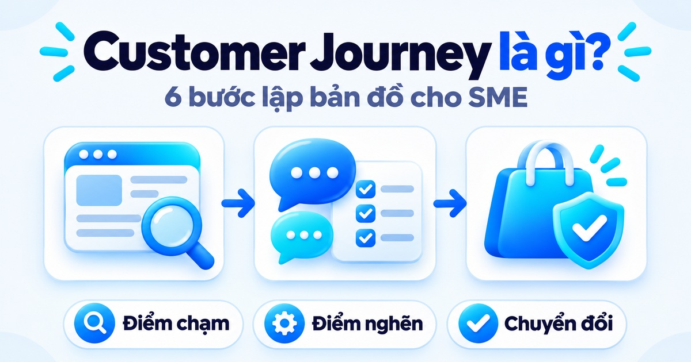
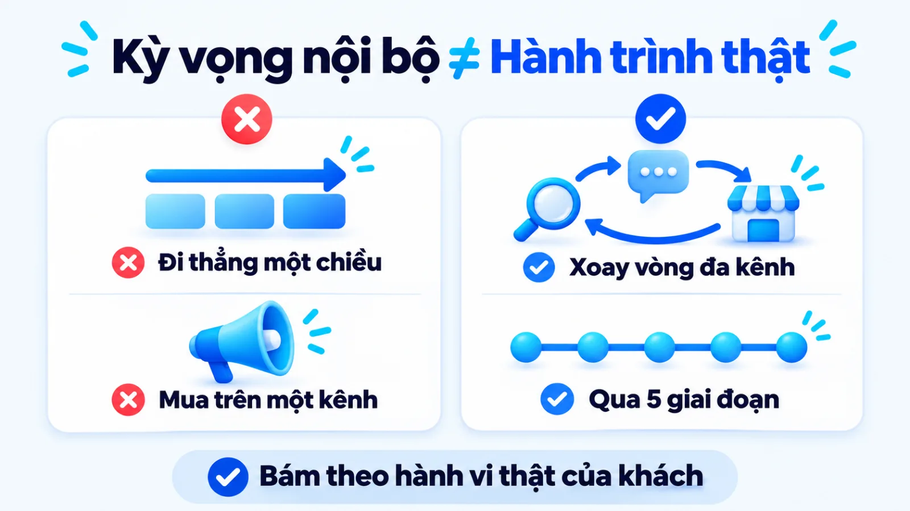
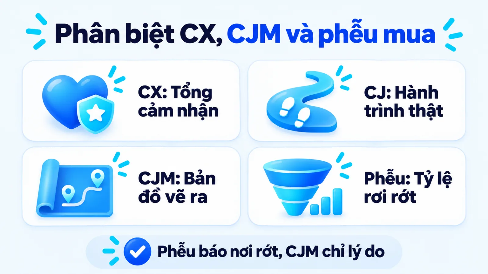
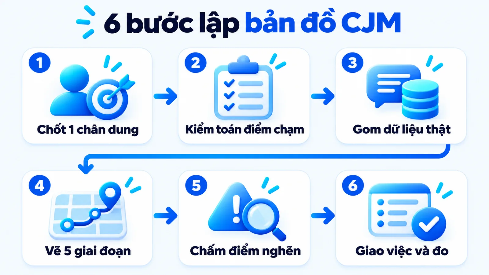
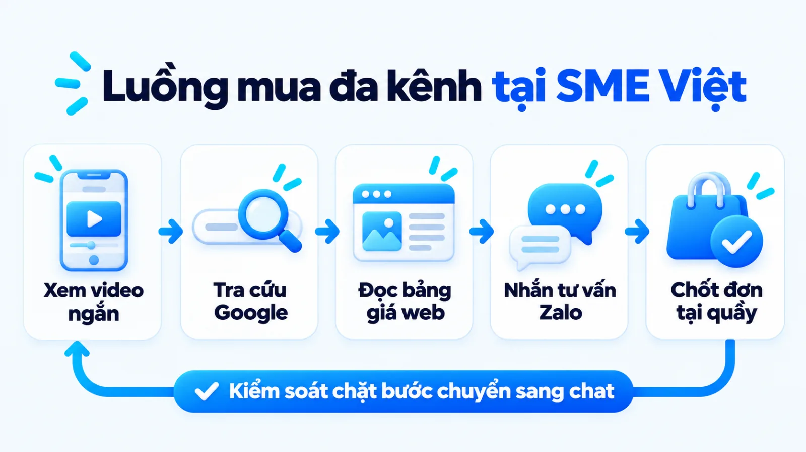
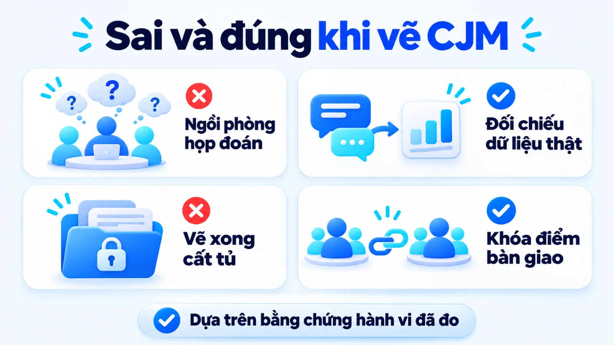
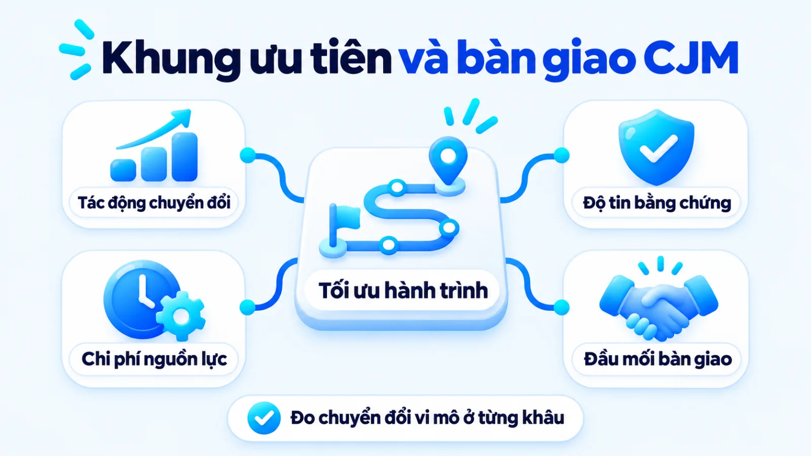

Customer Journey là gì và 6 bước lập bản đồ
Hiểu rõ customer journey là gì chính là nắm bắt toàn bộ chuỗi tương tác, suy nghĩ và cảm xúc thực tế mà người mua đi qua từ khi phát sinh nhu cầu, tìm hiểu, giao dịch cho đến lúc sử dụng và giới thiệu thương hiệu. Với doanh nghiệp vừa và nhỏ tại Việt Nam, khách hàng hiếm khi mua ngay trên một kênh đơn lẻ mà thường tìm kiếm trên Google, xem đánh giá ở mạng xã hội rồi chuyển sang nhắn tin Zalo hoặc đến cửa hàng trước khi chốt đơn. Khi thiếu một bản đồ nối liền các điểm chạm này, đội ngũ rất dễ đổ lỗi chéo giữa người chạy quảng cáo và người tư vấn vì không biết khách thực sự rời bỏ ở khâu nào. Tôi là Lê Tuấn Việt, Marketing Leader tại TAKI Group. Trong bài viết này, tôi làm rõ ranh giới giữa hành trình thực tế với phễu tiếp thị, quy trình sáu bước lập bản đồ từ dữ liệu sẵn có và khung chỉ số kiểm soát điểm bàn giao giữa Marketing, Sales và CSKH.
- Đăng ngày
- Cập nhật

Tóm tắt nhanh
- Customer Journey là lộ trình thực tế của người mua qua các điểm chạm, còn Customer Journey Map là tài liệu trực quan hóa lộ trình đó theo một chân dung cụ thể để tìm điểm nghẽn.
- Khác với phễu tiếp thị tuyến tính chỉ đo tỷ lệ chuyển đổi theo góc nhìn bán hàng, hành trình quyết định của người mua vận hành theo vòng lặp đánh giá chủ động và trải nghiệm sau mua.
- Mỗi bản đồ hành trình chỉ nên gắn với một chân dung khách hàng mục tiêu và tách bạch rõ dữ liệu hành vi đã kiểm chứng khỏi giả thuyết chủ quan của nội bộ doanh nghiệp.
- Bản đồ hành trình chỉ tạo ra giá trị vận hành khi gắn từng giai đoạn với chỉ số chuyển đổi vi mô, đầu mối chịu trách nhiệm và quy ước bàn giao giữa Marketing, Sales cùng CSKH.
Mục lục bài viết8 phần
Customer Journey là gì và 5 giai đoạn cốt lõi
Customer Journey (hành trình khách hàng) là toàn bộ chuỗi tương tác, suy nghĩ và cảm xúc thực tế mà một người trải qua từ khi phát sinh nhu cầu, tìm hiểu, mua sắm cho đến khi sử dụng và giới thiệu thương hiệu. Hiểu rõ customer journey là gì giúp doanh nghiệp nhìn lộ trình mua từ góc độ khách hàng thay vì quy trình nội bộ.

Bản chất hành trình khách hàng đa kênh tại SME
Nhiều doanh nghiệp vừa và nhỏ (SME, doanh nghiệp có nhân sự và ngân sách giới hạn) thường kỳ vọng khách đi theo đường thẳng từ thấy quảng cáo đến chốt đơn. Nghiên cứu năm 2009 của McKinsey & Company trên gần 20.000 người tiêu dùng ở 5 ngành hàng tại 3 châu lục chỉ ra quyết định mua vận hành theo vòng lặp đánh giá chủ động, trong đó khoảng hai phần ba điểm chạm đến từ hoạt động do người mua tự tra cứu đánh giá và hỏi bạn bè.
Tại Việt Nam, khách có thể xem video TikTok, lên Google tìm thương hiệu, đọc bình luận Facebook rồi nhắn Zalo hỏi giá trước khi ghé cửa hàng. Khi lập kế hoạch marketing tổng thể, nếu chỉ đo từng kênh rời rạc, đội ngũ sẽ bỏ sót khoảng trống chuyển tiếp giữa quảng cáo, khung chat và điểm bán.
Điểm chạm, điểm đau và động lực qua 5 giai đoạn
Tài liệu năm 2024 của HubSpot và khung phương pháp năm 2018 của Nielsen Norman Group (NN/g, tổ chức nghiên cứu trải nghiệm người dùng tại Hoa Kỳ) đều nhấn mạnh việc theo dõi hành động kèm cảm xúc tại từng điểm chạm (touchpoint, nơi khách tiếp xúc thương hiệu). Năm giai đoạn cốt lõi gồm có:
- Giai đoạn Nhận biết (Awareness): Khách nhận ra vấn đề qua Google, mạng xã hội hoặc lời giới thiệu; động lực là tìm hướng giải quyết sơ bộ, còn điểm đau (pain point, rào cản gây bỏ cuộc) là thông điệp quảng cáo chung chung.
- Giai đoạn Cân nhắc (Consideration): Khách so sánh giải pháp trên website và xem đánh giá; động lực là kiểm chứng độ tin cậy, còn điểm đau là thiếu bảng giá minh bạch hoặc thông tin giữa các kênh mâu thuẫn.
- Giai đoạn Mua hàng (Purchase): Khách nhắn Zalo, gọi hotline hoặc đến cửa hàng thanh toán; động lực là giao dịch an toàn, còn điểm đau lớn nhất tại SME là phản hồi tin nhắn chậm hoặc thủ tục rườm rà.
- Giai đoạn Duy trì (Retention): Khách sử dụng sản phẩm và liên hệ bảo hành khi cần; động lực là nhận đúng giá trị cam kết, còn điểm đau là cảm giác bị bỏ rơi sau khi đã thanh toán.
- Giai đoạn Giới thiệu (Advocacy): Khách hài lòng mua lặp lại hoặc giới thiệu người quen; động lực là sự gắn kết, còn điểm đau là thiếu kênh ghi nhận phản hồi và cơ chế ưu đãi khách cũ.
Điểm tôi muốn làm rõ là năm giai đoạn này không phải năm chiếc hộp đóng kín; nếu gặp rào cản ở bước tư vấn Zalo, khách sẽ quay lại chặng Cân nhắc để tìm đối thủ khác. Hiểu hành trình là hiểu lý do khách dừng bước.
Customer Journey là gì, khác gì CJM và phễu mua
Hiểu rõ customer journey là gì khi đặt cạnh Customer Journey Map (CJM, bản đồ hành trình khách hàng) và phễu mua hàng (Marketing Funnel) giúp đội ngũ chọn đúng công cụ phân tích. Trong khi CJM trực quan hóa lộ trình người mua đi qua các điểm chạm để đạt mục tiêu, phễu mua chỉ đo tỷ lệ chuyển đổi theo góc nhìn bán hàng.
Phân biệt hành trình thực tế với bản đồ biểu diễn
Theo định nghĩa năm 2018 của Sarah Gibbons tại Nielsen Norman Group, bản đồ hành trình là hình ảnh hóa quá trình một người đi qua nhằm đạt mục tiêu xác định. Nhiều đội ngũ nhầm hành trình thực tế với bản vẽ hoặc đánh đồng với phễu tiếp thị. Bảng dưới đây phân biệt ba khái niệm theo bốn tiêu chí:
| Tiêu chí | Customer Journey và CJM | Marketing Funnel |
|---|---|---|
| Góc nhìn gốc | Trải nghiệm thực của khách và bản vẽ mô phỏng lộ trình đó từ góc nhìn người mua | Mô hình quản trị theo góc nhìn nội bộ, đo số lượng khách thu hẹp dần tới lúc mua |
| Chiều vận động | Phi tuyến tính, khách nhảy kênh, lặp lại bước so sánh hoặc hỏi ý kiến trước khi mua | Tuyến tính một chiều từ Nhận biết đến Chuyển đổi, ít phản ánh các bước khách quay lui |
| Dữ liệu chính | Hành động tại điểm chạm, động lực, thắc mắc, cảm xúc, điểm đau và điểm bàn giao việc | Lưu lượng truy cập, số khách tiềm năng, tỷ lệ chuyển đổi và doanh thu từng tầng phễu |
| Mục đích dùng | Tìm lý do khách bỏ cuộc tại từng điểm chạm để sửa nội dung, tư vấn và chăm sóc sau bán | Dự báo doanh số, phân bổ ngân sách quảng cáo và kiểm soát hiệu suất thu hút khách mới |
Giới hạn khi đọc bảng: bảng trên tách hai công cụ để làm rõ chức năng, nhưng thực tế doanh nghiệp cần kết hợp cả hai. Phễu tiếp thị chỉ ra tỷ lệ rơi rớt nằm ở tầng nào, còn bản đồ hành trình giải thích nguyên nhân khiến khách rời bỏ để nâng chất lượng Customer Experience (CX, trải nghiệm khách hàng).

Cách chọn mô hình giai đoạn theo mục tiêu
Thay vì áp một khung cố định như AIDA (Chú ý, Quan tâm, Mong muốn, Hành động) cho mọi bài toán, doanh nghiệp nên chọn mô hình chia giai đoạn theo ba bối cảnh vận hành dưới đây:
- Mô hình 5 giai đoạn chuẩn: Hợp khi SME cần rà soát toàn diện hệ thống từ quảng cáo thu hút khách mới đến chăm sóc mua lại.
- Vòng lặp 4 chặng McKinsey: Hợp với ngành giá trị cao hoặc cân nhắc dài như y tế, nội thất, nơi khách tra cứu đánh giá kỹ.
- Mô hình tách chặng Onboarding: Hợp với dịch vụ B2B (khách hàng doanh nghiệp) hoặc phần mềm, nơi rủi ro rời bỏ tập trung ở giai đoạn đầu mới làm quen sản phẩm.
Các bước xây dựng Customer Journey Map cho SME
Các bước xây dựng Customer Journey Map cho SME gồm sáu bước nối tiếp từ chốt chân dung, chọn khung giai đoạn, kiểm toán điểm chạm, ghi nhận điểm đau đến chấm điểm ưu tiên và giao việc. Khi sản phẩm mới ở mức ý tưởng chưa có khách thật, bạn cần phỏng vấn xác nhận nhu cầu trước khi áp dụng sáu bước dưới đây:

Bước 1: Chốt mục tiêu kinh doanh và một chân dung hẹp
Chọn một bài toán cụ thể như giảm tỷ lệ khách bỏ cuộc sau khi hỏi giá Zalo và gắn bản đồ với đúng một chân dung người mua. Theo nguyên tắc năm 2018 của Nielsen Norman Group, gộp nhiều nhóm khách vào một sơ đồ sẽ làm mờ điểm nghẽn; hãy xem cách xác định khách hàng mục tiêu để tách tệp chuẩn xác.
Đầu ra: Thẻ phạm vi ghi rõ 1 mục tiêu kinh doanh, 1 chân dung (Buyer Persona) và 1 kịch bản giao dịch.
Bước 2: Xác định các giai đoạn sát chu kỳ mua thực tế
Chia hành trình thành 4 đến 6 giai đoạn phản ánh đúng các bước ra quyết định của khách chứ không chép tên phòng ban. Theo khung năm bước năm 2016 của Kate Kaplan tại Nielsen Norman Group, bước này cần đại diện Marketing, Sales (bán hàng) và CSKH (chăm sóc khách hàng) cùng thống nhất.
Đầu ra: Thanh tiêu đề ngang gồm 5 giai đoạn kèm dấu hiệu khách bước vào và rời khỏi từng chặng.
Bước 3: Kiểm toán điểm chạm trực tuyến, ẩn và trực tiếp
Liệt kê toàn bộ nơi khách tương tác với thương hiệu ở mỗi giai đoạn, gồm website, fanpage, Zalo OA (tài khoản doanh nghiệp trên Zalo), quảng cáo và cửa hàng. Đừng bỏ qua các điểm chạm ẩn trên dark social như tin nhắn Zalo cá nhân vốn không hiện rõ nguồn trong GA4 (Google Analytics 4).
Đầu ra: Danh sách điểm chạm đa kênh theo giai đoạn, đánh dấu rõ kênh có dữ liệu và kênh đứt mạch.
Bước 4: Thu thập dữ liệu hành động, cảm xúc và điểm đau
Điền hành động, câu hỏi, cảm xúc và điểm đau của khách vào từng giai đoạn dựa trên bằng chứng thật. Với SME ít ngân sách nghiên cứu, nguồn dữ liệu tiết kiệm nhất là đọc lại nhật ký chat Zalo, nghe ghi âm cuộc gọi của Sales và phỏng vấn ngắn khách vừa mua hoặc vừa từ chối.
Đầu ra: Bảng dữ liệu hành vi và điểm đau, mỗi ý gắn nhãn đã có bằng chứng hoặc giả thuyết.
Bước 5: Khoanh vùng điểm nghẽn và rà điểm bàn giao
Đặt dữ liệu các chặng cạnh nhau để tìm nơi khách rời bỏ nhiều nhất, đặc biệt tại điểm bàn giao (handoff) từ quảng cáo về website và từ khung chat sang chốt đơn. Tôi ưu tiên chấm điểm đau theo hai tiêu chí: mức độ làm mất doanh thu trực tiếp và khả năng tự sửa ngay bằng nguồn lực sẵn có.
Đầu ra: Danh sách 3 đến 5 điểm nghẽn ưu tiên cao nhất kèm nguyên nhân tại điểm bàn giao.
Bước 6: Phân công cải tiến và gắn chỉ số kiểm chứng
Chuyển mỗi điểm nghẽn thành đầu việc cụ thể, gán bộ phận chịu trách nhiệm chính (Marketing, Sales hoặc CSKH) và chỉ số đo trước sau khi sửa. Theo hướng dẫn năm 2018 của Nielsen Norman Group, quyền sở hữu đầu việc (ownership) là yếu tố quyết định để bản đồ đi vào vận hành.
Đầu ra: Bảng kế hoạch hành động ghi rõ việc cần sửa, người phụ trách, hạn hoàn thành và chỉ số đo.
Biểu mẫu bản đồ hành trình đa kênh cho SME Việt
Biểu mẫu bản đồ hành trình đa kênh cho SME Việt Nam gom toàn bộ tương tác rời rạc giữa tìm kiếm Google, mạng xã hội, tin nhắn Zalo và cửa hàng vào một bảng trực quan. Thay vì vẽ đồ họa cầu kỳ nhưng thiếu tính hành động, bảng ba cột dưới đây tập trung vào bằng chứng điểm đau và đầu việc phân công.
Dưới đây là một ví dụ biên tập, không phải kết quả khách hàng thật, minh họa bản đồ cho phòng khám nha khoa quy mô vừa tại Hà Nội cần tối ưu website chuẩn chuyển đổi nối với tư vấn Zalo:
| Giai đoạn | Điểm chạm, hành động và điểm đau | Cải tiến và bộ phận phụ trách |
|---|---|---|
| 1. Nhận biết | Quảng cáo, Google: xem video chỉnh nha, tra giá; thiếu điều kiện giá (bình luận hỏi) | Ghi rõ khoảng giá theo tình trạng răng ngay trên quảng cáo. Phụ trách: Đội Marketing |
| 2. Cân nhắc | Web, nhóm Facebook: đọc bài, xem ca thực tế; trang tải chậm, thiếu giá (thoát ở GA4) | Tối ưu tốc độ tải trang, thêm bảng giá theo gói và hỏi đáp. Phụ trách: Đội Marketing |
| 3. Mua hàng | Zalo, phòng khám: nhắn hỏi lịch hẹn; sau 20 giờ phản hồi chậm, hỏi lặp (30 log chat) | Cài tin nhắn tự động giữ luồng, đồng bộ form sang Zalo. Phụ trách: Sales, Marketing |
| 4. Duy trì | Phòng khám, Zalo OA: tái khám định kỳ; khách quên lịch, không rõ nơi hỏi khi đau ê | Cài lịch nhắc tái khám tự động qua Zalo OA kèm hướng dẫn. Phụ trách: Bộ phận CSKH |
| 5. Giới thiệu | Google Maps, Zalo: hoàn tất liệu trình, muốn giới thiệu bạn bè nhưng quên mức ưu đãi | Gửi thẻ ưu đãi giới thiệu bạn bè qua Zalo ngay sau tái khám. Phụ trách: CSKH và Sales |
Giới hạn khi đọc bảng: biểu mẫu trong ví dụ biên tập này minh họa luồng dịch vụ cần tư vấn trước khi chốt; với bán lẻ thương mại điện tử giá trị thấp, bước Mua hàng có thể diễn ra thẳng trên giỏ hàng website mà không qua bước hẹn lịch.

Nguyên tắc xây dựng Customer Journey Map đúng
Nguyên tắc xây dựng Customer Journey Map đúng đòi hỏi doanh nghiệp tuân thủ bốn kỷ luật cốt lõi: bám sát góc nhìn người mua, tách bạch dữ liệu thực chứng khỏi giả thuyết nội bộ, phân biệt bản đồ hiện trạng với bản đồ mong muốn, và khóa chặt điểm bàn giao liên phòng ban dưới đây:
- Bám sát mục tiêu người mua: Ghi nhận bước đi theo vấn đề khách cần giải quyết, không vẽ theo thủ tục nội bộ.
- Mỗi bản đồ một chân dung: Không gộp khách mua lẻ và khách đại lý vào chung một bảng làm giải pháp bị mờ nhạt.
- Tách hiện trạng và mong muốn: Vẽ đúng những gì đang diễn ra kèm lỗi thực tế trước khi thiết kế lộ trình tương lai.
- Khóa điểm bàn giao đầu việc: Mọi điểm đau phát hiện trên bản đồ đều phải quy về một bộ phận chủ trì sửa chữa.
Tách dữ liệu thực tế khỏi giả thuyết nội bộ
Tại sao nhiều đội ngũ họp vẽ bản đồ rất đẹp nhưng chuyển đổi vẫn giậm chân tại chỗ? Theo nghiên cứu năm 2016 của Kate Kaplan tại Nielsen Norman Group, bản đồ chỉ dựa trên ý kiến nội bộ mới là bản đồ giả thuyết (assumption map) và bắt buộc phải xác thực bằng dữ liệu khách hàng thực tế.
Thay vì tự đoán trong phòng họp rằng khách chê giá cao, bạn hãy đối chiếu nhật ký chat Zalo với dữ liệu zero-party và first-party (dữ liệu khách tự khai và hành vi trên web, phần mềm quản lý khách hàng CRM) để thấy nguyên nhân thật thường là thiếu thông tin bảo hành hoặc báo giá chậm.

Rà điểm bàn giao giữa Marketing, Sales và CSKH
Khi tích hợp bản đồ vào chiến lược digital marketing, tôi ưu tiên thiết lập quy ước bàn giao kèm tóm tắt bối cảnh (khách đến từ quảng cáo nào, đang xem gói nào) khi chuyển liên hệ sang Sales để khách không phải lặp lại nhu cầu từ đầu. Bản đồ thiếu người nhận việc chỉ là tranh treo tường.
Cách tối ưu Customer Journey Map bằng chỉ số
Cách tối ưu Customer Journey Map bằng chỉ số là gắn từng giai đoạn trên bản đồ với hệ thống đo lường ba tầng gồm tín hiệu tương tác, chuyển đổi vi mô và kết quả kinh doanh xác nhận, từ đó chấm điểm ưu tiên xử lý điểm nghẽn theo nguồn lực thực tế.
Theo tài liệu năm 2017 của Hoa Loranger tại Nielsen Norman Group, chuyển đổi vi mô trong hành trình là các bước hành vi nhỏ tiến tới chuyển đổi chính. Khi đặt chỉ số vi mô cạnh CPL (chi phí mỗi khách tiềm năng) và CPA (chi phí mỗi chuyển đổi), bảng dưới đây giúp định rõ thứ tự ưu tiên sửa:
| Giai đoạn | Tầng đo, chỉ số và nguồn dữ liệu | Giới hạn đọc số và ưu tiên sửa |
|---|---|---|
| 1. Nhận biết | Tầng tương tác: lượt hiển thị, tỷ lệ nhấp (CTR), tìm thương hiệu trên Search Console | CTR cao chưa hẳn có nhu cầu mua thật; chỉ sửa khi quảng cáo nhắm sai tệp khách hàng |
| 2. Cân nhắc | Tầng vi mô: tỷ lệ xem bảng giá, thời gian đọc bài, lượt nhấp nút Zalo mở form ở GA4 | Nhấp chat chỉ báo hiệu ý định tìm hiểu; sửa ngay nếu xem bảng giá nhiều mà ít liên hệ |
| 3. Mua hàng | Tầng doanh thu: phản hồi dưới 5 phút, lead đạt chuẩn, tỷ lệ chốt, CPL và CPA trên CRM | Chốt đơn thấp dù lead nhiều do sai tệp hoặc tư vấn chậm; ưu tiên rà nhật ký chat trước |
| 4. Duy trì | Tầng giữ chân: hoàn tất hướng dẫn đầu kỳ, thời gian xử lý lỗi, tỷ lệ mua lại tại CSKH | Chu kỳ mua lại tùy ngành hàng; ưu tiên can thiệp khi khách phàn nàn lặp lại một lỗi |
| 5. Giới thiệu | Tầng bền vững: số đánh giá thực trên Google Maps, fanpage và khách từ mã giới thiệu | Giới thiệu qua chat riêng không hiện trên GA4; cần hỏi trực tiếp khách biết qua đâu |
Giới hạn khi đọc bảng: theo tài liệu của Google Analytics Help, báo cáo lộ trình phân bổ sự kiện chính (Key event attribution paths) trong GA4 chia hành trình thành điểm chạm đầu, giữa và cuối trên web, nhưng không tự nhìn thấy hội thoại trong Zalo hay giao dịch tại quầy.

Tiêu chí xếp hạng điểm đau khi ít nguồn lực: Khi phát hiện nhiều điểm nghẽn cùng lúc, bạn hãy chấm điểm theo mức ảnh hưởng tới tỷ lệ chốt đơn, độ mạnh của bằng chứng trên GA4 cùng nhật ký chat và khả năng tự sửa ngay, từ đó ưu tiên xử lý điểm nghẽn gần bước Mua hàng trước.
Sau mỗi đợt chỉnh sửa, người phụ trách cần đối chiếu chỉ số nền (baseline) với KPI (chỉ số đánh giá hiệu quả) trong cùng kỳ đo. Trong dự án cố vấn Marketing cho Hệ thống Y Đa khoa TOMEC (tháng 8/2025 đến tháng 8/2026) do tôi phụ trách, việc gỡ điểm nghẽn giúp tăng 40% khách hàng tiềm năng và giảm 54% CPL, từ 1,2 triệu xuống 550.000 đồng mỗi data trong điều kiện của đơn vị.
Câu hỏi thường gặp về Customer Journey
Doanh nghiệp ít dữ liệu nên lập bản đồ từ đâu?
Doanh nghiệp ít dữ liệu nên bắt đầu từ bản đồ giả thuyết cho nhóm khách tạo doanh thu chính thay vì chờ phần mềm đắt tiền. Đội ngũ có thể đọc lại nhật ký chat Zalo gần đây, nghe cuộc gọi của Sales và hỏi khách vừa giao dịch để đánh dấu mục đã có bằng chứng thật.
Khi nào cần tách bản đồ riêng cho từng nhóm khách?
Có, doanh nghiệp cần tách bản đồ riêng ngay khi hai nhóm khách có động lực mua, chu kỳ cân nhắc hoặc điểm chạm quyết định khác hẳn nhau. Nếu gộp chung khách mua lẻ qua mạng xã hội với khách doanh nghiệp tìm trên Google, giải pháp cải tiến sẽ bị trung bình hóa và không gỡ đúng điểm nghẽn.
Khi nào doanh nghiệp chưa nên vẽ bản đồ hành trình?
Không, doanh nghiệp chưa nên vẽ bản đồ hành trình phức tạp khi sản phẩm mới ở mức ý tưởng chưa có khách thật hoặc chưa rõ chân dung mục tiêu. Ở giai đoạn đầu, bạn nên trò chuyện trực tiếp với người mua để xác nhận nhu cầu và hoàn thiện kịch bản bán hàng cơ bản trước.
Customer Journey khác gì với Customer Experience?
Customer Journey là chuỗi các bước, hành động và điểm chạm nối tiếp nhau mà khách hàng đi qua để giải quyết một nhu cầu cụ thể. Trong khi đó, Customer Experience (CX, trải nghiệm khách hàng) là tổng cảm nhận và mức độ hài lòng của người mua qua mọi tương tác với thương hiệu.
Vì sao chỉ số chuyển đổi giữa web và Zalo bị lệch?
Chỉ số chuyển đổi giữa website và Zalo lệch nhau vì người mua tại Việt Nam thường đọc web rồi bấm sang Zalo hoặc gọi điện để chốt đơn. Công cụ GA4 chỉ ghi nhận tới lượt nhấp nút liên hệ, nên doanh nghiệp cần đo sự kiện nhấp chat kết hợp gắn thẻ nguồn khách trong sổ đơn hàng.
Kết luận
Hiểu đúng bản chất hành trình khách hàng giúp doanh nghiệp thoát khỏi cái bẫy chỉ nhìn bảng số liệu quảng cáo rời rạc, còn bản đồ hành trình biến những quan sát đó thành bảng phân công sửa lỗi cụ thể tại từng điểm chạm giữa Marketing, Sales và CSKH.
Ngay trong tuần này, bạn hãy chọn một nhóm khách hàng đang mang lại doanh thu chính, lấy các đoạn chat Zalo hoặc cuộc gọi gần nhất đặt cạnh dữ liệu trang đích để tìm ra điểm rơi rớt lớn nhất ở khâu chuyển tiếp và giao đầu mối sửa ngay.
Khi doanh nghiệp mở rộng nhiều dòng sản phẩm hoặc chạy đa kênh, việc chỉ vá từng điểm chạm lẻ sẽ không còn đủ mà cần một hệ thống hoạch định và đo lường chuyển đổi đồng bộ trên toàn bộ chuyên mục Marketing của doanh nghiệp.
Doanh nghiệp của bạn đang mất dấu khách hàng nhiều nhất ở bước xem trang đích, bước nhắn tin hỏi giá hay bước chăm sóc mua lặp lại?